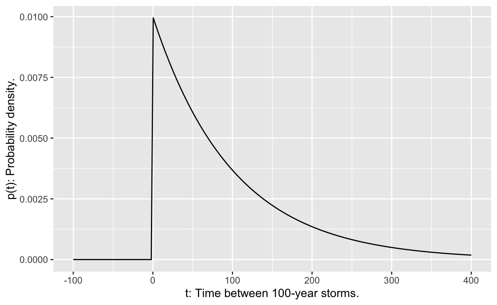
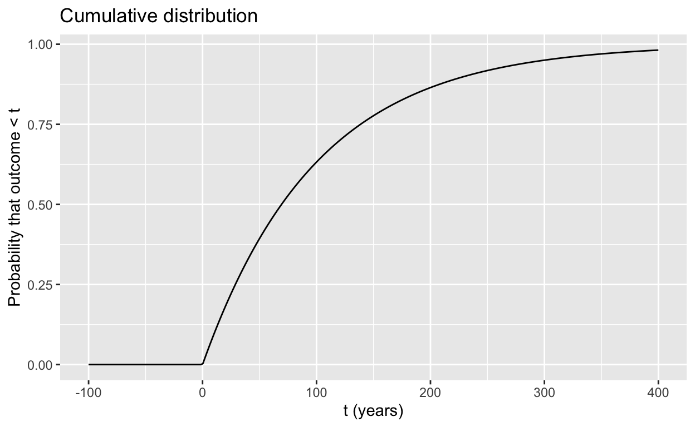

Throughout the course, we’ve been building models from a small set of modeling functions:
In terms of derivatives, exponentials, power-law functions, and sinusoids have a remarkable property:
The derivative of a \(\left\{\begin{array}{c}\mbox{exponential}\\\mbox{power-law}\\\mbox{sinusoid}\end{array}\right\}\) is a \(\left\{\begin{array}{c}\mbox{exponential}\\\mbox{power-law}\\\mbox{sinusoid}\end{array}\right\}\)
The same property can also be stated in terms of anti-derivatives :
The anti-derivative of a \(\left\{\begin{array}{c}\mbox{exponential}\\\mbox{power-law}\\\mbox{sinusoid}\end{array}\right\}\) is a \(\left\{\begin{array}{c}\mbox{exponential}\\\mbox{power-law}\\\mbox{sinusoid}\end{array}\right\}\) \(+ C\).
Logarithm functions don’t have this property: the derivative of a logarithm is not a logarithm function. But they are not that far afield. They border on exponentials (the log function is the inverse of an exponential function) and also power-law functions; the anti-derivative of \(x^{-1}\) is \(\ln(x) + C\) and, of course, the derivative of \(\ln(x)\) is \(x^{-1}\).
Sigmoids and hump functions similarly do not have this property. The derivative of a sigmoid is not a sigmoid and the derivative of a hump is not a hump. But …
The \(\left\{\begin{array}{c}\mbox{derivative}\\\mbox{anti-derivative}\end{array}\right\}\) derivative of a \(\left\{\begin{array}{c}\mbox{sigmoid}\\\mbox{hump}\end{array}\right\}\) is a \(\left\{\begin{array}{c}\mbox{hump}\\\mbox{sigmoid}\end{array}\right\}\)
In this Daily Digital, you’re going to explore humps and sigmoids in a specific setting: uncertainty and risk. It turns out that each hump and its corresponding sigmoid provide different perspectives on the same phenomenon.
Note: This section introduces some new technical words, such as “probability,” “variance,” “state space,” and “cumulative” that are broadly important in quantitative work but not traditionally considered part of calculus. Try to understand what these words mean. That will help you in your later studies in downstream courses. But you will not be examined on the details in this course.
Uncertainty is the state of being unreliable or undetermined. Probability is—in modern usage—a way of quantifying uncertainty, of putting uncertainty on a scale. Before the modern era, probability was a kind of opposite to uncertainty, a state of being reliable or determined. This almost complete reversal of the definition of probability reflects the difficulty untrained people have in doing probability calculations correctly.
In the mathematical formulation of probability, central components are the “event” and the “state space.” An event is something that happens, think of one flip of a coin as an event, or one frame in bowling, or the wind speed at a particular instant. The state space is the set of all possible outcomes of an event. The state space of a coin flip is famously heads or tails. The state space of a frame in bowling is the numbers 0 through 10 reflecting the number of pins bowled over. (We’re ignoring “strikes” here.) The state space of wind speed is a non-negative number as might be read off of an anemometer.
A probability is a number assigned to an element of a state space. For instance, in a coin flip, the number 1/2 is conventionally assigned to each of the possible outcomes: heads or tails. There are two essential properties that these assigned numbers must have to be valid probabilities:
The probability number 0 is assigned to elements of the state space that need not have been listed in the first place, because they cannot happen.
The probability number 1 is assigned to a single element of the state space that is inevitable.
Other than the possibly unfamiliar formal vocabulary used in the preceding, the statements (1) and (2) are intuitive to many people. What might calculus have to contribute?
This course being calculus, we are concerned particularly with quantities that are continuous, e.g. the location of a point on the number line, the weight of a bucket after it’s been rained on, etc. For a continuous quantity, the state space will be the number line \(-\infty < x < \infty\) or some finite segments of the number line, e.g. \(0 \leq x \leq 1\). Either way, the state space consists of an infinite number of possible values. For example, one member of the \(0 \leq x \leq 1\) state space is 0.963012894848362656100076390430914821056649089340673461090773. Another is 0.4204042488709096655207811854786639390334021305202371464110919373058862984183853728834073997986972243. Still others are \(1/\sqrt{2}\) and \(1/\pi\) and \(1/e\) and on and on without end.
To illustrate, the sandbox allows you to specify any target number you like between 0 and 1, which we’ll call \(\tau\) (tau). Using a professional quality “random number generator” called rnorm(), we’ll generate 100 or 1000 or 1,000,000 events, each of which is a random number between 0 and 1. Then calculate how many of those events hit your specific target. You can look at each of the events by uncommenting the middle line. The last line counts how many of the events “hit the target.” (0 means, “none of them hit the target.”)
Play the game as many times as you like, with whatever number \(0 \leq \tau \leq 1\) you think will be most lucky. The integer argument to rnorm() specifies how many trials to run. For the sake of not burdening the computers serving the Daily Digital, don’t make the argument much bigger than 1,000,000. You only need to change the numbers in blue font to play the game and hit the check your answer button.
tau <- 1/3 # or whatever number you like between 0 and 1
# rnorm(100) == beta # look at each of the events
sum(rnorm(10000) == tau) # 10,000 eventsoptions(gradethis_glue_correct = "All misses!! Don't feel bad. { .message } { .correct }",
gradethis_glue_incorrect = "Really? {.message}")
gradethis::grade_result(
pass_if( ~ sum(.result) == 0,
message = "This is what we expected. There are so many possibilities when we work in continuous space. But feel free to try again and again and again and ..."),
fail_if( ~ sum(.result) == 1,
message = "That's amazing! We've never seen such a thing before. And likely we will never see such a thing again. In fact, we're sure there was some bug in the software or a computer malfunction and that you wouldn't have gotten any hits if things were working. Nonetheless, please leave this as your answer (even though it's marked 'wrong') so that we can know who is the most lucky student of all our students, ever!"),
fail_if( ~ TRUE,
message = "Ask Dr. Kaplan to tell you the story of the man who got the equivalent of this at the Montreal casino in the 1990s ... and what happened after he was released from jail!")
)Given the result from the “randomly hit the target” experiment, it would be reasonable to conclude that runif(0) picks numbers each of which has a probability of 0. It would be better to say that the probability is infinitesimal, just like the \(h\) in the definition of the derivative or the \(dx\) in the way we write integrals.
Calculus provides the means to assign such infinitesimal probabilities to the elements of a continuous state space. The strategy is this:
Such functions are called “probability density functions.” Here’s one probability density function:
\[\mbox{uniform} (x) \equiv \left\{\begin{array}{cl}\frac{1}{b-a} & \mbox{when} \ a \leq x \leq b\\0&\mbox{otherwise} \end{array}\right.\] Consider a question like, “What’s the probability that the outcome of an event governed by the uniform probability density will be \(c\)?”
The answer is not \(f(c)\). Neither is it \(f(c) dx\).
Instead, the answer is \(\int_c^c f(x) dx = 0\).
Many non-mathematicians might answer the question by saying that the probability is \(f(c) dx\). There’s something to that answer, but remember that \(dx\) is a notation meaning “take the limit as it goes to zero,” \(f(c)dx\) is a limit rather than a number. (Save yourself from trying to sort this out with a shortcut: \(f(c) dx\) isn’t a number. But \(\int_c^c f(x) dx\) is a number, namely 0.)
\(f(c)\) is much like the concept of “density.” We can meaningfully say that a material has a density at each point. But it’s not useful to say that a material has a mass at each point. The mass of a material is the integral of the density over the space occupied by the material.
The probability density function is a helpful way of visualizing the possible outcomes of an event. By looking at a graph of the density function, you can see which outcomes are relatively likely and which are not.
For instance, here is a probability density function called an “exponential density.” \[p(t) \equiv k\, e^{-t/k}\] Exponential densities are often used to model things like the time between earthquakes or the time between engine failures. As an example, if \(t\) is measured in years and \(k=1/100\), the exponential density is the standard model of the time between consecutive 100-year storms at a location.

Notice that the probability density is zero for negative time. That’s just common sense at work; the time between consecutive storms can’t be negative. Perhaps more surprisingly, there’s a substantially non-zero probability density for the time between storms being just 10 years, or even less! And notice the very small numbers on the y-axis; the density is much less than 1. But that’s OK, because a probability density is not the same as a probability.
The cumulative distribution translates the probability density into an actual probability (a number between zero and one). Formally, the cumulative distribution is \[P(t) \equiv \int_{-\infty}^t p(t) dt\]
Evaluating \(P(t)\) at given value of \(t\) gives a probability. For instance, \(P(10) \approx 0.095\), roughly 10%. In terms of storms, this means that according to the standard model of these things, the time between consequtive 100-year storms has a 10% chance of being 10 years or less!
A graph of the cumulative distribution shows what you might have anticipated: the hump function \(p(t)\) has an integral that is a sigmoid function.

The expectation value is an important way to summarize a probability density function. It can be a valuable way to inform decisions, a topic we’ll save for another day. Here, we’ll focus on the calculation of the expectation value itself.
Expectation values are useful, for example, in deciding whether to make an investment. Suppose you have been offered a “ground floor” opportunity in a start-up company. The statistics of start-ups show that 50% fail in their first year and another 50% of the survivors fail each year after that. You’ll have to forego salary, but you will be given stock options. You think, after 5 years, if the company gets that far, the options will be worth $5M. Should you take the job, instead of, say, a job paying $50K/year with a long-established company? Your simple model is that there is a 1/32 chance that the options will come through for $5M, otherwise they will be worthless. The expectation value is $5,000,000 \(\times 1/32 =\) $156,250. This is less than what you would make working for the long-established company during the 5 years. A simple form of decision-making compares the expectation value of the start-up ($156,250) with the expectation value of then $50K/year job over five years.
Calculus provides tools for working with more subtle models. You are working with a process where each event generates a numerical outcome according to a probability density function \(f(x)\). We collect the outcomes from many events: a series of numbers. As you know, the average of the numbers is often used to represent a “typical” outcome, a shorthand way of summarizing the sequence itself.
The expectation value is the value we would get for the average if we could construct an infinitely long series of events. “Infinitely long series” is an imaginary, theoretical construct. But calculus provides a way to simulate an infinitely long series. The expectation value corresponding to a probability density function \(f(x)\) is an integral: \[\int_{-\infty}^\infty x \cdot f(x) dx\]
The sandbox below gives the probability density function for the exponential process used in the example of the time interval between successive 100 year storms. Your task is to compute the expectation value for the time between storms. In symbols, this is \[\int_{-\infty}^\infty t\times p(t)\, dt\] You can use antiD() to find the antiderivative and Inf to stand for infinity.
# probability density
p <- makeFun(ifelse(t < 0, 0, exp(-t/100)/100) ~ t)
# For the expectation value, we want to integrate t*p(t)
F <- antiD(...integrand... ~ t)
# Evaluate
F(...upper...) - F(...lower...)grade_result(
pass_if(~ abs(.result - 100) < .0001, message="Since you're integrating out to infinity, don't be surprised if there's some round-off error."),
fail_if( ~ TRUE)
)Work out this anti-derivative on paper.
Once you have your result, translate it into a correct R function.
F <- makeFun( ~ x)library(magrittr)
gradethis::grade_result(
fail_if( ~ !is.function(.result), message = "Your result should be in the form of a function."),
fail_if( ~ !"t" %in% names(formals(.result)),
message = "Shouldn't t be involved in this?"),
fail_if( ~ !all(correct_arguments %in% names(formals(.result))),
message = "You don't seem to have the right argument name."),
pass_if( ~ all(.result(t=1:10, x=5, A=1,B=2,C=3, D=4) ==
answer_fun(t=1:10,x=5, A=1,B=2, C=3, D=4))),
fail_if( ~ TRUE, message="Correct arguments, but not the right function.")
) Now that you have the correct answer, use Latex to typeset the formula in the function here. Some Latex tips: \sin() will produce \(\sin()\). Note that the backslash at the start of \sin() does something. Without the backslash, that is sin(), you get \(sin()\). If you don’t see the difference, don’t worry about it. But fastidious typesetters (like the author) are obsessive about such things.
REMEMBER: Press the REFRESH button before copying the hash code and submitting it at the USAFA Math 142Z site
Location: CalcZ/_DailyDigitals/DailyDocuments/inst/DD-142Z-08/142Z-DD-08.Rmd DD-142Z-08